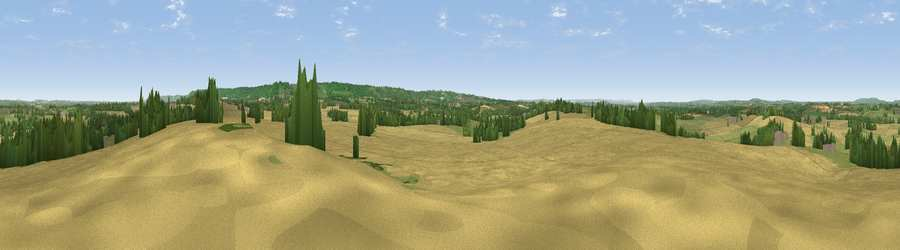

Viewpoint near Postcombe
#17156 in England · top 16% of its area beats it · near PostcombeThe view, rendered

A 360° render of this exact spot computed from the terrain model, tree cover and land cover — summer colours, afternoon light, calibrated against photographs of famous viewpoints. Real trees, hedges and buildings will differ in detail.
The panorama
Grey silhouette: terrain skyline in each direction (720 bearings, Earth curvature and refraction included). Dashed green: skyline with trees (+15 m) and buildings (+8 m) as obstacles. Blue strip: how far the ground is visible on each bearing.
Where the view opens
Wedge length = distance to the farthest visible ground on that bearing (vegetation-aware). Rings at 10, 25 and 50 km.
What fills the view
60% cropland · 27% grassland · 13% woodland ·
Angular shares of the visible panorama (visual magnitude), not map area. Landscape diversity 0.42 (0–1 Shannon).
Key numbers
More beautiful places nearby
The staircase of upgrades: each row has a higher view potential than everything closer. Driving times are estimates from straight-line distance, calibrated against real road routing — check an actual route before setting out.
| Place | Direction | Drive | Score |
|---|---|---|---|
| Viewpoint near Lewknor | SE · 5 km | ~10 min | 70.8 |
| Viewpoint near Lewknor | ESE · 5 km | ~10 min | 74.4 |
| Coombe Hill Monument | ENE · 18 km | ~32 min | 75.5 |
| Viewpoint near Woolstone | WSW · 40 km | ~60 min | 76.7 |
| Martinsell viewpoint | SW · 61 km | ~84 min | 77.3 |
| Broadway Hill | NW · 68 km | ~91 min | 77.7 |
| Viewpoint near Cleeve Hill | WNW · 75 km | ~98 min | 79.6 |
| Cleeve Hill | WNW · 75 km | ~99 min | 79.8 |
51.68403, -1.01238 · source: screening · position refined by local search. Computed location — check access rights before visiting.